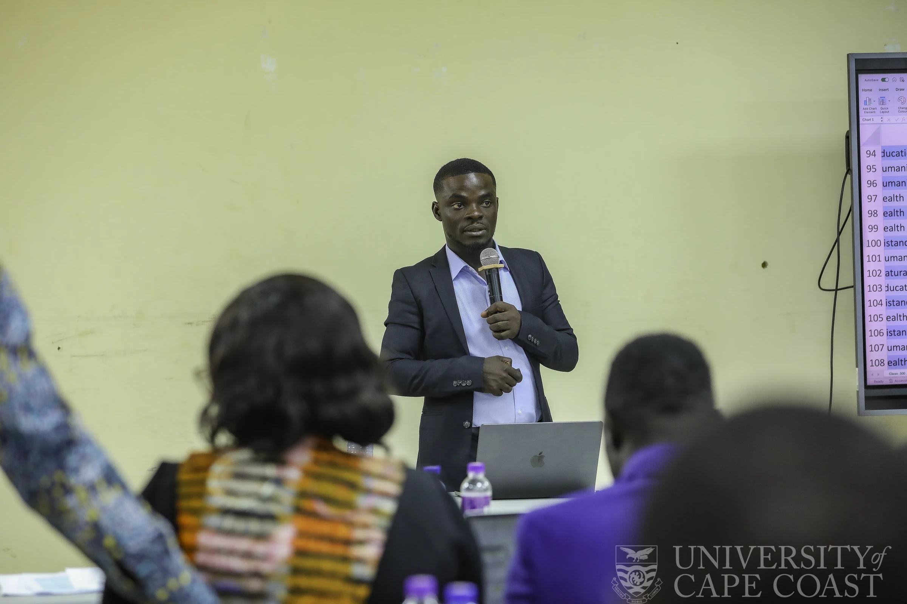
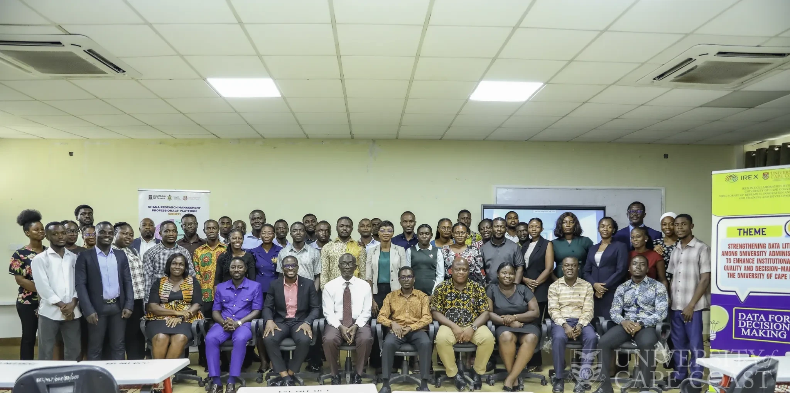
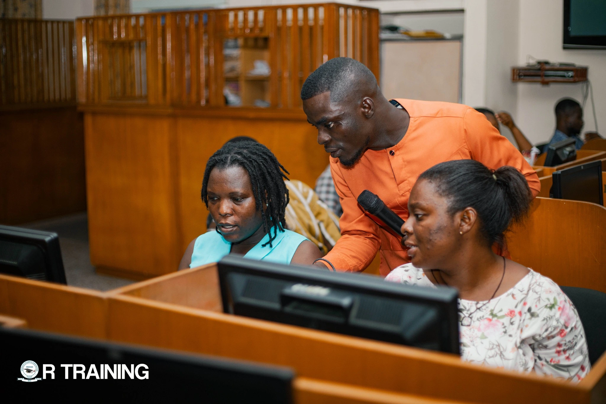
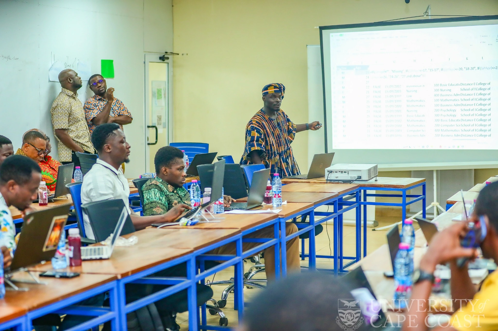

Level 1
First Year
ECO 107 introduces economic and financial data workflows using Excel and R.
My teaching is built around methodological reasoning and practical execution. Students should understand why an analytical method is appropriate, how to implement it in software, how to test its assumptions and how to communicate the result accurately.

Applied teaching and quantitative-methods facilitation at the University of Cape Coast.
I teach quantitative subjects as a sequence of decisions rather than a sequence of buttons. Students first identify the research question and data structure, then justify the method, examine assumptions, execute the analysis and interpret the output in language appropriate to the discipline.
This approach is especially important when teaching students entering quantitative research from qualitative or non-technical backgrounds. My role is to reduce technical anxiety without lowering methodological standards.
Across postgraduate and undergraduate courses, I use prepared datasets, guided software exercises, applied African examples and structured interpretation tasks.
My course pages are structured by level and prepared for lecture slides, R scripts, Python notebooks, datasets, practicals and other teaching resources.
Level 1
ECO 107 introduces economic and financial data workflows using Excel and R.
Level 2
ECF 206 and EST 206 extend computer applications and R-based empirical analysis.
Level 3
Project Appraisal I and II and Economics of Capital Markets connect theory with applied evaluation and financial-market analysis.
Level 4
The hub serves fourth-year level for advanced undergraduate courses and future teaching resources.
Level 8
DIS 814 Data Analysis and Quantitative Research Methods focus on advanced analytical reasoning and software-based execution.
Browse course outlines, topic roadmaps and resource shelves.
Lead lecturer for a 3-credit postgraduate course in the Department of Information Science, Faculty of Arts, University of Cape Coast.
Qualitative and quantitative analysis across the full analytical pipeline.
The course equips postgraduate students to make informed decisions using data. It moves from data collection and management to qualitative coding and modelling in NVivo, quantitative analysis in IBM SPSS Statistics, introductory structural equation modelling in SmartPLS and the ethics of data analysis.
Graduate Assistant on an advanced postgraduate course designed for social science students with predominantly qualitative research backgrounds.
Research foundations
Research paradigms, quantitative design, operationalisation, scales of measurement, reliability and validity, sample design and questionnaire construction.
SPSS & inferential statistics
Hypothesis testing, effect sizes, assumption checking, t-tests, Pearson and Spearman correlation, chi-square, one-way and two-way ANOVA, ANCOVA and MANCOVA.
Advanced applied methods
Exploratory Factor Analysis, OLS multiple regression, binary logistic regression and conceptual introduction to reflective and formative PLS-SEM using SmartPLS.



My teaching extends beyond scheduled university courses into postgraduate research training, professional capacity building, academic workshops, digital learning and community-focused data literacy. Across these settings, I emphasise hands-on learning, allowing participants to work directly with data, software and real analytical problems rather than engaging only with abstract methodological concepts.
I have facilitated and supported R programming and applied data-analysis training for postgraduate students, helping learners develop practical skills in data preparation, exploratory analysis, statistical interpretation and reproducible research workflows. My wider training work also includes quantitative research methods, applied econometrics and software-supported analysis for students and early-career researchers.
I have also delivered practical Microsoft Excel and data-literacy training within the University of Cape Coast, including professional development activities for university administrators and registrars. These sessions have focused on data management, PivotTables, data visualisation, professional reporting and the use of everyday institutional data to improve evidence-based decision-making.
Through Bafcoll Learning Hub and other academic training activities, I contribute to making R programming, econometrics and advanced analytical methods more accessible. My teaching and learning interests extend to Quantile-on-Quantile Regression, wavelet-based techniques, information-flow methods and other quantitative approaches that students and researchers often find technically difficult to enter without structured practical guidance.
In 2026, my capacity-building work expanded further through UCC Data Literacy Week, the Foundational Knowledge in Data Science and Artificial Intelligence Training Programme and the DSOMC Senior High School Data Literacy and Mentorship Programme. These activities connected university-level training with online learners, teachers and Senior High School students, reinforcing my broader commitment to widening access to practical data skills and responsible use of analytical technologies.
My technical toolkit spans econometrics, statistical analysis, qualitative and quantitative research, machine learning, bibliometric analysis, reproducible research and digital teaching.
Training can be structured for postgraduate students, academic departments, research teams or beginner learners and adapted to the software and methods required.